Kleine Fläche, große Wirkung
Moore nehmen geringe Flächenanteile ein, können aber für Klimaschutz, Biodiversität und Wasserhaushalt entscheidend sein.
Moore · Klimaschutz · regionale Umsetzung
Wiedervernässung ist nicht nur eine ökologische Maßnahme. Sie verändert Nutzung, Betriebe, Wertschöpfung und Planung.
Moore nehmen geringe Flächenanteile ein, können aber für Klimaschutz, Biodiversität und Wasserhaushalt entscheidend sein.
Globale Karten zeigen Relevanz. Umsetzung entsteht erst auf nationaler, regionaler und betrieblicher Ebene.
Schutz, Wiedervernässung, angepasste Nutzung und Förderinstrumente müssen zusammen gedacht werden.
Kernargument
Moorschutz wird erst dann planbar, wenn räumliche Kulissen, regionale Nutzung, betriebliche Betroffenheit und mögliche Wertschöpfungsketten gemeinsam betrachtet werden.
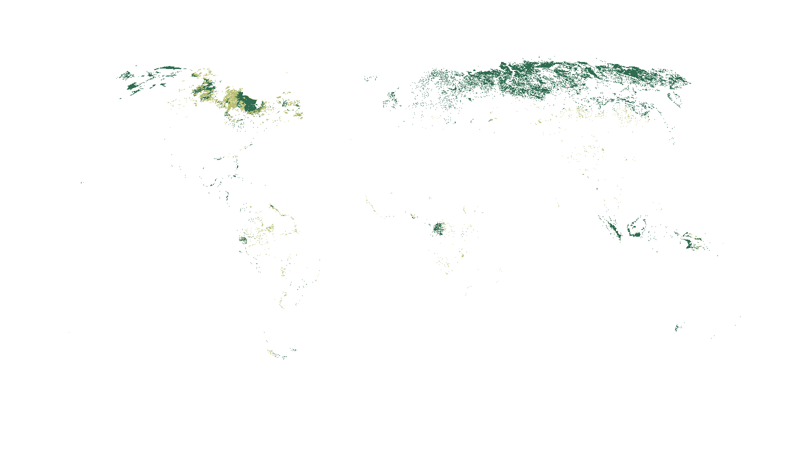
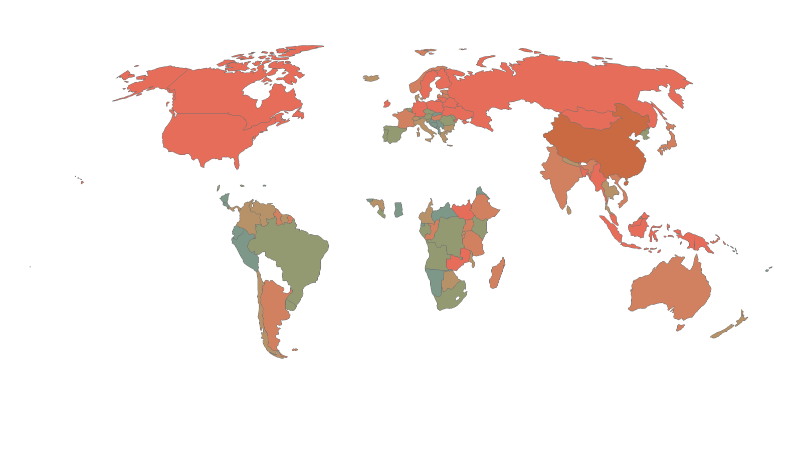
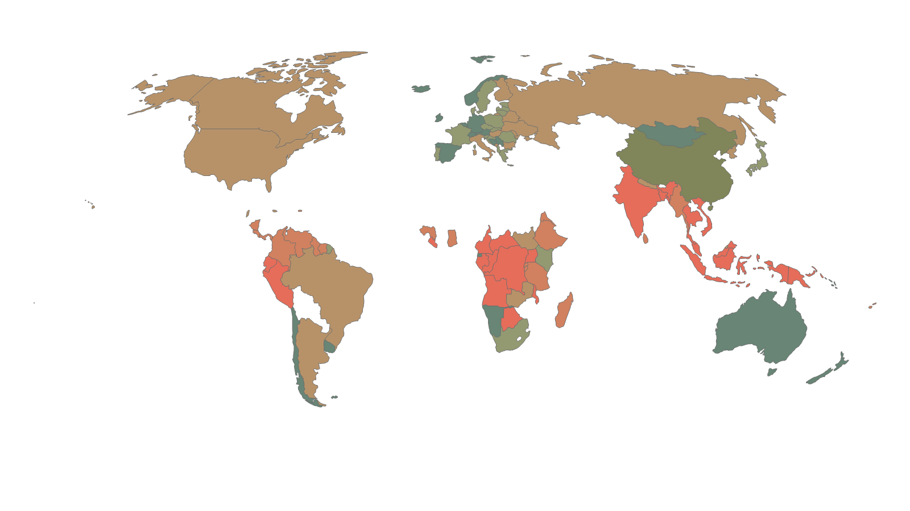
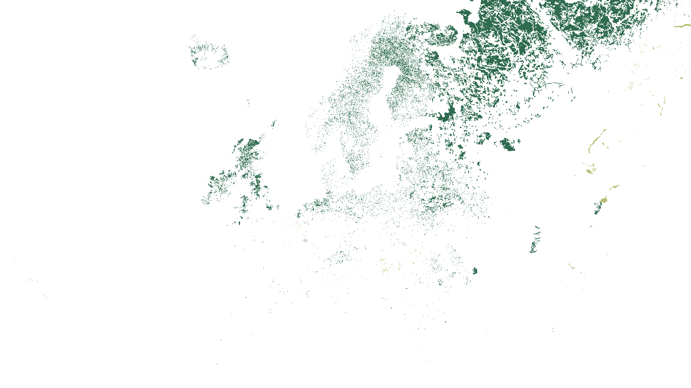
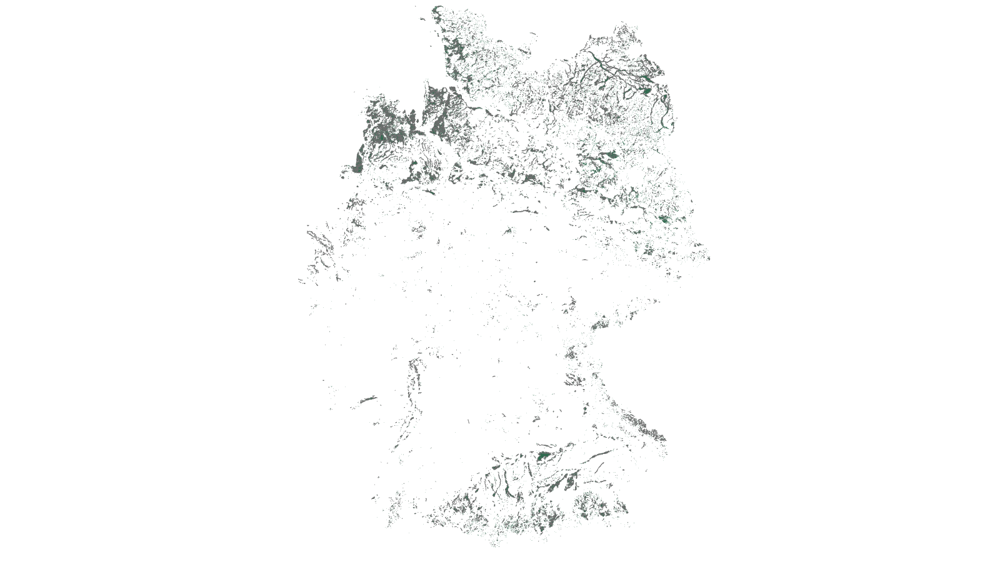
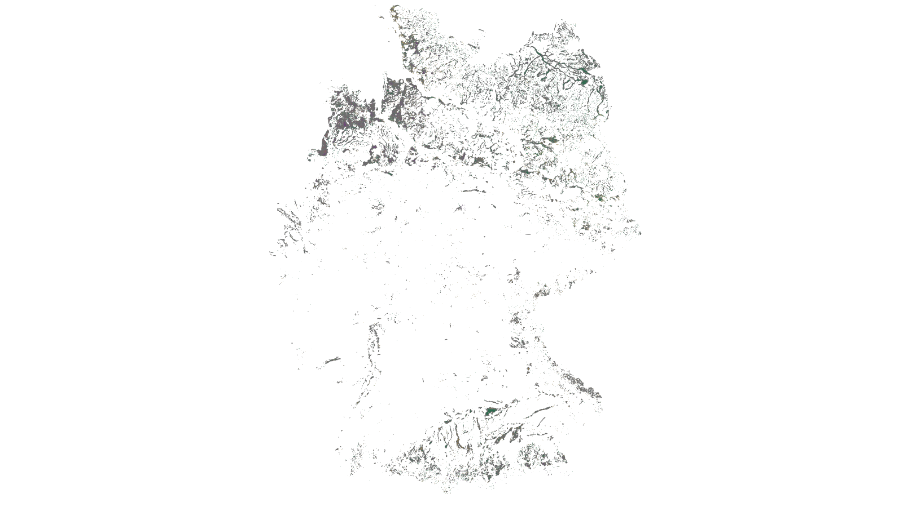
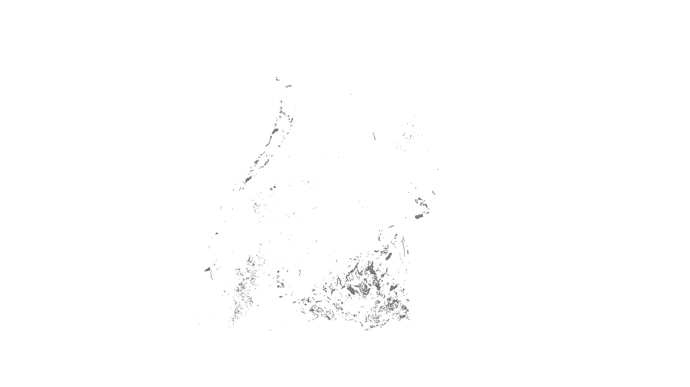
Layer stack: Global Peatland Map 2.0 context and country hotspot layers. All images exported from the same ArcGIS global map frame.
Die räumliche Kulisse zeigt, wo Moorschutzfragen entstehen.
Entwässerung und Nutzung verändern Moore von Speichern zu Quellen.
Dichtekarten zeigen, wo Belastung räumlich besonders konzentriert ist.
Flächengröße und Emissionsintensität führen nicht immer zur selben räumlichen Aussage.
Politische und administrative Grenzen übersetzen globale Relevanz in Handlungsräume.
Moorlandschaften folgen Landschaft und Hydrologie, nicht Verwaltungslinien.
Nationale Kulissen übersetzen globale Relevanz in Planung und Förderung.
Sie macht sichtbar, wo organische Böden für nationale Umsetzung relevant werden.
Unterschiedliche Bodenkontexte verlangen unterschiedliche Übergänge.
Auf regionaler Ebene werden Moor- und Feuchtbodenkontexte zur Planungsfrage.
Die Karte ordnet räumlich ein, ersetzt aber keine Eignungs- oder Prioritätsprüfung.
Moore verstehen
Ein Moor ist kein gewöhnlicher Boden. Solange Torf nass bleibt, speichert er Kohlenstoff; wird er entwässert, wird er zur dauerhaften Emissionsquelle. Darum führt die Oberschwaben-Story von Boden und Nutzung direkt zur Frage: Wie lässt sich Wasserstand verändern, ohne Betriebe und Landschaften zu überfordern?
Torf entsteht, wenn Pflanzenreste unter nassen, sauerstoffarmen Bedingungen langsamer abgebaut als aufgebaut werden. Sinkt der Wasserstand, gelangt Sauerstoff in den Torfkörper; Torf mineralisiert und setzt Treibhausgase frei.
Für landwirtschaftliche Transformationsfragen sind häufig Niedermoore und Feuchtbodenkomplexe relevant. Ob Nassgrünland, Paludikultur, Renaturierung oder Moor-PV realistisch sind, hängt von Wasserstand, Degradierung, Nährstoffen, Technik und regionaler Koordination ab.
Regionale Umsetzung
In Baden-Württemberg wird Moorschutz zur konkreten Frage: Welche Betriebe sind betroffen, welche Nutzungen bleiben möglich, welche Produkte tragen und welche Förderinstrumente sind nötig?
Die Moorschutzkonzeption Baden-Württemberg liefert den strategischen Rahmen für Schutz, Renaturierung, Monitoring und Förderung.
SOLAMO-BW untersucht regionale Betriebsmuster und die Umsetzbarkeit von Nutzungskonzepten auf wiedervernässten Moorflächen.
Nasseverträgliche Kulturen, robuste Weidesysteme und stoffliche oder energetische Nutzung benötigen tragfähige Märkte.
Transformationspfade
Die zentrale Aufgabe ist nicht die eine Maßnahme, sondern die passende Kombination aus Wasserstand, Nutzung, Betriebsperspektive und öffentlicher Förderung.
Naturnahe Moore erhalten, hydrologische Störungen begrenzen und Nährstoffeinträge reduzieren.
Entwässerte Moorböden vernässen und Nutzung schrittweise auf nasse Bedingungen ausrichten.
Produkte, Wertschöpfungsketten und Betriebsmodelle entwickeln, die mit höheren Wasserständen vereinbar sind.
Methodische Grenze
Die dargestellten Boden- und Moorinformationen sind eine räumliche Einordnung. Sie ersetzen keine Flächeneignungsprüfung, keine Priorisierung und keine betriebliche Betroffenheitsanalyse.
Datenbasis: Global Peatland Map 2.0, Thünen-Kulisse organischer Böden, BK50 Baden-Württemberg, LUBW/Moorschutzkonzeption, SOLAMO-BW-Projektinformationen.
Regionale Umsetzung
Die regionale Karte zerlegt den Zusammenhang in einzelne Ebenen: Verwaltungsraum, landwirtschaftliche Nutzung, Moor-/Feuchtbodenkontext und ihre räumliche Überschneidung.
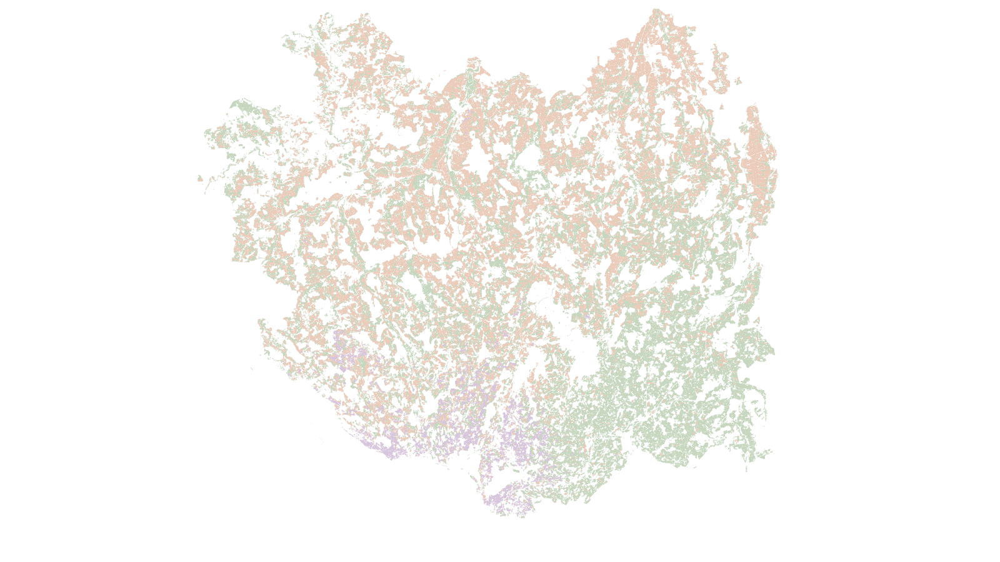
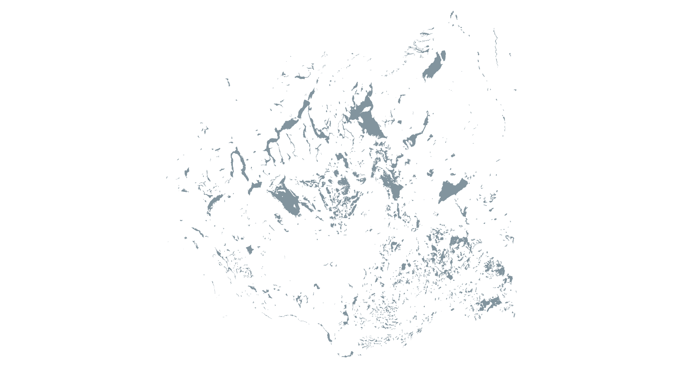
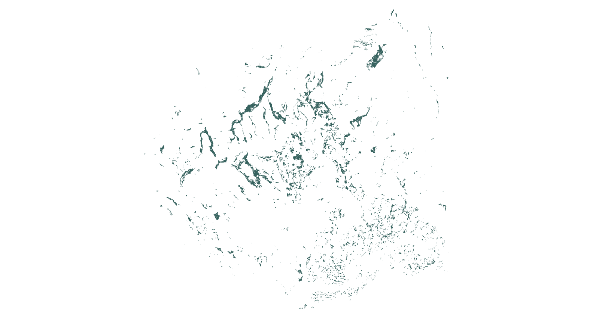
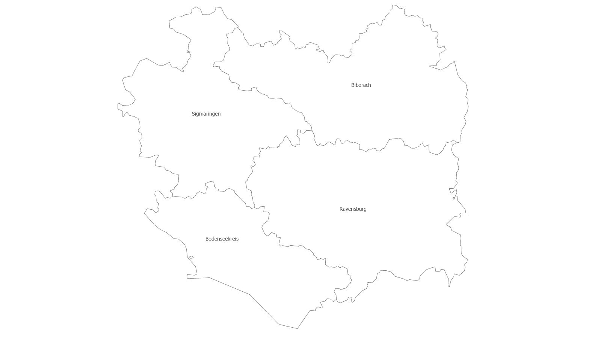
1 / Region
Der Blick richtet sich auf vier Landkreise in Oberschwaben: Biberach, Ravensburg, Sigmaringen und den Bodenseekreis. Die Karte beginnt bewusst mit Orientierung, nicht mit Bewertung.
2 / Nutzung
Ackerland, Grünland und Dauerkulturen bilden unterschiedliche Produktionsräume. Für regionale Moorschutzstrategien ist diese Nutzungskulisse ein Ausgangspunkt, aber noch keine Aussage über Eignung oder Priorität.
3 / Bodenkontext
Die BK50-basierte Ebene ordnet Moor- und Feuchtbodenkontexte räumlich ein. Sie zeigt, wo bodenkundliche Ausgangsbedingungen mit bestehenden Nutzungsräumen zusammenfallen können.
4 / Schnittmenge
Die Schnittmenge aus landwirtschaftlicher Nutzung und Moor-/Feuchtbodenkontext markiert Räume, in denen Transformationsfragen konkret werden: Bewirtschaftung, Wasserstand, Betriebslogik, Förderung und regionale Abstimmung.
5 / Grenze der Aussage
Die Karte zeigt eine räumliche Einordnung der Überschneidung von landwirtschaftlicher Nutzung und Moor-/Feuchtbodenkontext. Sie ersetzt keine Flächeneignungsprüfung, keine Priorisierung und keine betriebliche Betroffenheitsanalyse.
Interne Verschneidung
Die Karte bleibt eine räumliche Einordnung. Die interne Flächen-QA zeigt aber, dass die Schnittmenge aus landwirtschaftlicher Nutzung und Moor-/Feuchtbodenkontext nicht nur visuell plausibel ist, sondern auch quantitativ trägt.
Datenbasis: FIONA 2024, BK50 Moor-/Feuchtbodenkontext, GISCO NUTS 2024; eigene Verschneidung und B98c-Klassifikations-QA. Werte gerundet.
Transformationspfade
Die Oberschwaben-Karte zeigt nicht, was auf einer einzelnen Fläche getan werden muss. Sie zeigt, wo unterschiedliche Transformationspfade verhandelt werden müssen: zwischen Wasserstand, Nutzung, Betriebslogik, Förderung und regionaler Kooperation.
Pfad 1 · Grünlandnah
Ein großer Teil der Oberschwaben-Schnittmenge liegt im Grünlandkontext. Fachlich spricht das für Pfade, die an bestehende Nutzungen anschließen: Nassgrünland, angepasste Schnittregime, extensive Beweidung oder robuste Weidesysteme. Entscheidend ist nicht nur der Wasserstand, sondern auch, ob Futter, Arbeit und Verwertung in die Betriebslogik passen.
Pfad 2 · Ackerbaulich sensibel
Ackerland in Moor- oder Feuchtbodenkontexten ist meist der stärkere Transformationsfall. Hier geht es nicht um eine einfache Extensivierung, sondern um Nutzungswechsel, neue Kultur- und Produktpfade, Flächentausch oder langfristige Einkommens- und Investitionssicherheit.
Pfad 3 · Sonder- und Dauerkultur
Dauerkulturen und spezialisierte Nutzungen sind kleinräumig und betriebsnah zu interpretieren. Sie eignen sich nicht für pauschale Aussagen. In solchen Räumen muss zuerst geklärt werden, ob der Moor-/Feuchtbodenkontext überhaupt mit realistischen Wasserstands- und Nutzungspfaden zusammengebracht werden kann.
Pfad 4 · Kooperation
Wiedervernässung und nasse Nutzung hängen an Gräben, Stauregimen, Nachbarschaft, Infrastruktur und Zuständigkeiten. Deshalb wird aus einer Flächenfrage schnell eine Governance-Frage: Landwirtschaft, Kommunen, Wasserwirtschaft, Naturschutz und Förderung müssen gemeinsam handlungsfähig werden.
Die interne Flächen-QA stützt die qualitative Erzählung: Die Schnittmenge ist überwiegend ein Grünlandthema. Ackerbauliche Anteile sind kleiner, aber fachlich sensibler. Stilllegung und unklare FIONA-Zuweisungen sollten getrennt von normalem Ackerland gelesen werden.
Datenbasis: FIONA 2024, BK50 Moor-/Feuchtbodenkontext, GISCO NUTS 2024; eigene räumliche Verschneidung und Klassifikations-QA. Zahlen dienen hier der internen Plausibilisierung, nicht als flächenscharfe Planungsaussage.
Nutzung und Wertschöpfung
Die Transformationspfade werden erst tragfähig, wenn aus Biomasse, Pflege, Energie oder Flächenorganisation reale Abnahme- und Erlöslogiken entstehen. Die Matrix zeigt keine Empfehlung pro Standort, sondern typische Kombinationen aus Nutzung, Produktlogik und Engpass.
Verarbeitung lohnt sich erst bei ausreichender Menge. Anbau lohnt sich erst bei sicherer Abnahme. Nachfrage entsteht erst bei verlässlicher Qualität, Standards und wettbewerbsfähigen Produkten. Deshalb ist Moorschutz auf Landwirtschaftsflächen immer auch Wertschöpfungs- und Koordinationsarbeit.
Grundlage: kuratierte Literatur- und Projektauswertung zu Paludikultur, Nassgrünland, Nassweide, Sphagnum, Moor-PV und SOLAMO-BW-Wertschöpfungsketten; diese Matrix ist eine Orientierung, keine Standortempfehlung.